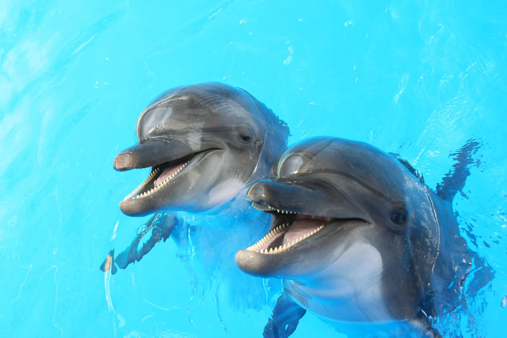

Winter's Conservatory
About Us
Winter's conservatory is a sage home for dolphins that cannot return back into the ocean. As a fictional partner with Clearwater Marine Aquarium, Winter's Conservatory is a non-profit organization that hosts dolphins from all over the country. Winter's Conservatory was created in memory of Winter: The dolphin with the first prosthetic tail. Thanks to Winter and many scientists and engineers, we are able to help dolphins and give them a good life. Winter's Conservatory is located in Clearwater, Florida, USA.